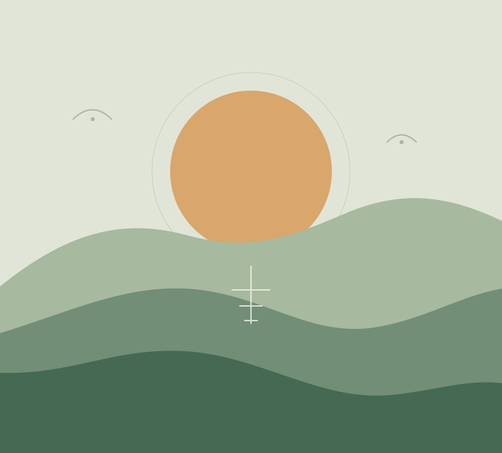

What does “well” mean to you?
A personal definition can leave room for energy, connection, purpose, and rest.
A project about the long view
An open notebook for curious people thinking about health, time, and the small choices that make a life feel more like their own.
Explore the questionsIdeas to explore. No promises to make.

MAKE ROOM FOR THE WHOLE PICTURE
Start with better questions
There is no single score for a good life. This fictional project makes space for the context, trade-offs, and people behind each question.
A personal definition can leave room for energy, connection, purpose, and rest.
Useful habits have to make sense alongside the work, care, and joy already in a day.
Good questions begin with the people whose lives and experiences are involved.
From the notebook
THREE STARTING POINTSShort prompts for a thoughtful conversation—not prescriptions or medical advice.
A starting point for looking beyond a single measure and asking what matters in daily life.
Read the promptA gentle invitation to notice which parts of an ordinary week leave you feeling more yourself.
Read the promptA conversation starter about the people, places, and shared rituals around us.
Read the promptAbout this example
This is an original fictional concept page made to demonstrate a public project site. Its writing is illustrative, not clinical guidance or a claim about a real person, study, service, or outcome.